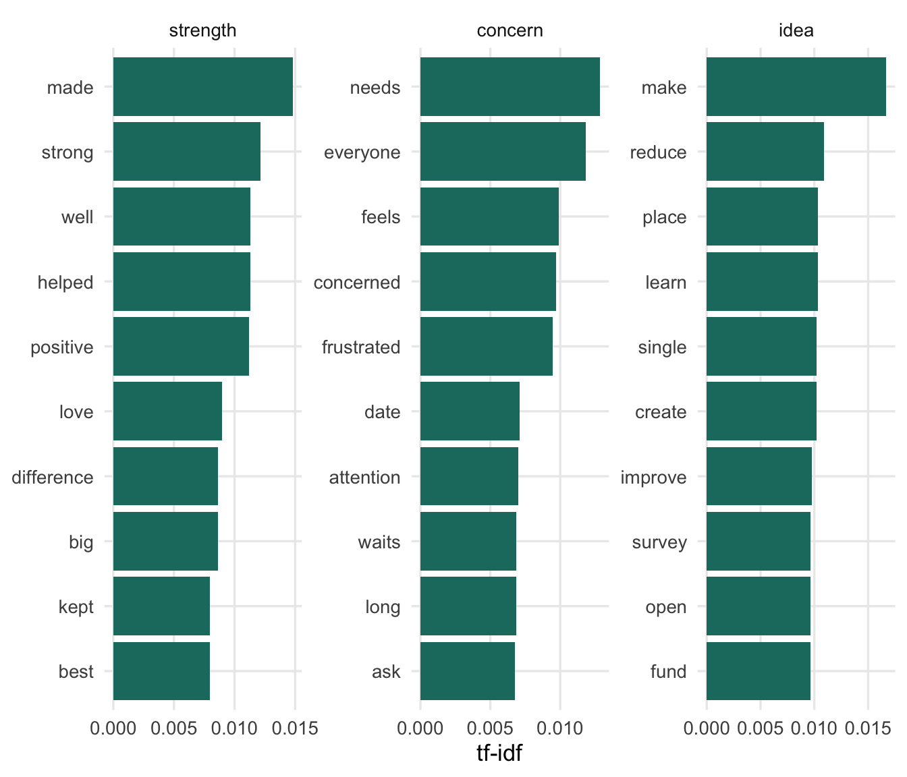
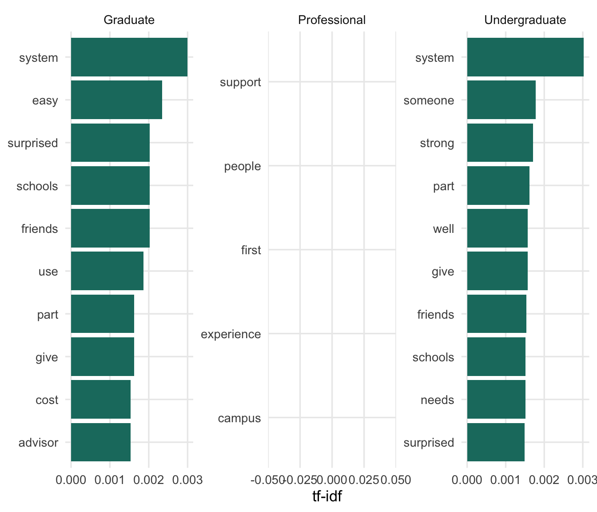

source("R/helpers.R")
library(tidytext)
vcu <- load_vcu()
stops <- stop_words |> filter(lexicon == "snowball")
custom_stops <- tibble(word = c("vcu", "student", "students", "like",
"get", "just", "really", "also", "can"))
tokens <- vcu |>
unnest_tokens(word, text) |>
anti_join(stops, by = "word") |>
anti_join(custom_stops, by = "word") |>
filter(!str_detect(word, "^\\d+$"))3 Term Frequency and TF-IDF
Data for this chapter: data/vcu_cares_long.csv
In Chapter 2 we counted words, and the counts told us little: the most frequent words were the ones that show up everywhere. What we usually want is the opposite. We want the words that are distinctive of one group of answers compared with the others. TF-IDF is the standard way to find them.
By the end of this chapter you will be able to explain what TF-IDF measures, calculate it by hand on a tiny example, use it to compare groups, and recognize its main weakness.
The setup block repeats the cleaning from the last chapter: load the data, split into words, and remove the standard stop words, our domain stop words, and bare numbers. After it runs, tokens is a table with one row per remaining word.
3.1 The intuition
Imagine you are looking for a book in a library, and the librarian says, “It has the word the in it a lot.” That is no help: every book does. Now imagine she says, “It mentions photosynthesis a lot.” That narrows it down at once. The first word is common everywhere; the second is common here and rare elsewhere.
TF-IDF turns that idea into a number. It combines two pieces.
- Term frequency (TF): how often a word appears in this document. Frequent words in a document are probably important to it.
- Inverse document frequency (IDF): how rare the word is across all the documents. A word that is in every document tells you nothing, so it gets a low score. A word in only a few documents tells you a lot, so it gets a high score.
Multiply them, and you get a score that is high only when a word is frequent here and rare elsewhere.
NoteWhat is a “document”?
In text mining, a document is just whatever unit of text you decide to treat as one piece. It might be one answer, one student’s three answers combined, or all the answers to one question stuck together. TF-IDF compares documents against each other, so your choice of document decides what the results mean. We try two choices below.
3.2 The formulas
If you are comfortable with equations, here they are. If not, the plain-language version after each one is all you need.
Term frequency is the share of a document’s words that are a given word:
\text{tf}(t, d) = \frac{n_{t,d}}{\sum_k n_{k,d}}
In words: the number of times word t appears in document d, divided by the total number of words in d. If “housing” is 2 of the 3 words in a document, its tf is 2/3, about 0.67.
Inverse document frequency is a rarity score:
\text{idf}(t) = \ln\left(\frac{N}{n_t}\right)
where N is the total number of documents and n_t is the number of documents containing word t. The symbol \ln is the natural logarithm. You do not need to know how logarithms work, only that the result gets bigger as the word gets rarer. A word that is in every document has N / n_t = 1, and \ln(1) = 0, so its idf is zero. A word in only one of three documents has \ln(3) \approx 1.10.
TF-IDF is the product:
\text{tf-idf}(t, d) = \text{tf}(t, d) \times \text{idf}(t)
Because anything multiplied by zero is zero, a word that appears in every document scores zero no matter how often it is used. That is how TF-IDF screens out the “the” words automatically.
3.3 A tiny example by hand
Three miniature documents make the arithmetic visible.
toy <- tribble(
~doc, ~word,
"A", "housing", "A", "housing", "A", "events",
"B", "events", "B", "events", "B", "parking",
"C", "events", "C", "advising"
)
toy |>
count(doc, word) |>
bind_tf_idf(word, doc, n)# A tibble: 6 × 6
doc word n tf idf tf_idf
<chr> <chr> <int> <dbl> <dbl> <dbl>
1 A events 1 0.333 0 0
2 A housing 2 0.667 1.10 0.732
3 B events 2 0.667 0 0
4 B parking 1 0.333 1.10 0.366
5 C advising 1 0.5 1.10 0.549
6 C events 1 0.5 0 0 -
tribble()is a convenient way to type a small table by hand. The lines beginning with~name the columns (docandword), and what follows fills the rows two values at a time. So document A contains the words “housing,” “housing,” and “events.” -
count(doc, word)counts how many times each word appears in each document, creating the columnn. -
bind_tf_idf(word, doc, n)calculates TF, IDF, and TF-IDF and adds them as new columns. It takes three arguments: which column holds the term (word), which holds the document (doc), and which holds the count (n).
Now check the output against the formulas.
- “Events” appears in all three documents, so its idf is \ln(3/3) = 0, and its tf-idf is 0 no matter how often it appears. It is the toy version of “the.”
- “Housing” appears only in document A, where it is 2 of 3 words (tf ≈ 0.67). It is in 1 of 3 documents, so idf is \ln(3/1) \approx 1.10. Its tf-idf is 0.67 \times 1.10 \approx 0.73.
- “Advising” appears only in document C, where it is 1 of 2 words (tf = 0.5). Its tf-idf is 0.5 \times 1.10 \approx 0.55.
Work one more row out by hand to convince yourself.
3.4 Documents = the three questions
First choice: treat each question as one big document. TF-IDF then tells us which words are characteristic of strengths versus concerns versus ideas.
tfidf_q <- tokens |>
count(question, word) |>
bind_tf_idf(word, question, n)
tfidf_q |>
group_by(question) |>
slice_max(tf_idf, n = 10, with_ties = FALSE) |>
ungroup() |>
ggplot(aes(tf_idf, reorder_within(word, tf_idf, question))) +
geom_col() +
scale_y_reordered() +
facet_wrap(~question, scales = "free") +
labs(x = "tf-idf", y = NULL)
Building the scores. count(question, word) counts each word within each question, and bind_tf_idf(word, question, n) scores them, this time with question playing the role of the document. There are only three documents, so N = 3.
Drawing the chart. This is the same recipe as the bar charts in Chapter 2: keep the ten highest-scoring words in each question (group_by() then slice_max()), then draw faceted bars with facet_wrap(), using reorder_within() to sort the words inside each panel.
Reading the result. With only three documents, a word that appears in all three gets an idf of zero and vanishes. A word that appears in just one question scores high. The results are real but coarse: with N = 3, idf can only take a few values. That is a reason to be careful about tiny document counts.
3.4.1 Common is not the same as unimportant
That zero raises a fair question. Suppose every student named tuition as a concern. “Tuition” would then appear in every document, its idf would be zero, and it would vanish from the chart. Isn’t it still important?
It is. TF-IDF is not missing a mistake; it is answering a different question. TF-IDF measures distinctiveness, not importance. It asks what sets one document apart from the others, and a word that everyone uses sets no one apart. The formula cannot tell a filler word like “the” from a concern everyone shares: both look “common everywhere.”
So match the tool to the question:
| Question | Tool |
|---|---|
| What do students talk about most? | Counts, or the share of answers that mention a word (Chapter 2) |
| What does this group say that others don’t? | TF-IDF (this chapter) |
The share of answers is easy to compute. Count each word at most once per answer, then divide by the number of answers:
tokens |>
distinct(doc_id, word) |>
count(word, sort = TRUE) |>
mutate(share = n / n_distinct(vcu$doc_id)) |>
head(10)# A tibble: 10 × 3
word n share
<chr> <int> <dbl>
1 campus 659 0.191
2 help 497 0.144
3 people 364 0.106
4 experience 359 0.104
5 things 349 0.101
6 communication 341 0.0989
7 support 339 0.0983
8 opportunities 316 0.0916
9 better 312 0.0905
10 first 283 0.0821-
distinct(doc_id, word)keeps one row for each answer-word pair, so a student who writes “tuition” three times counts once. -
count(word, sort = TRUE)then gives the number of answers each word appears in, sorted from most to least. -
sharedivides by the total number of answers. A share of 0.10 means the word appears in 10% of answers.
Words near the top of this list but absent from the TF-IDF chart are the “important but universal” ones. Report both views: one tells you what is common, the other tells you what is different.
TipExact zeros are rare
A word has to appear in every document to score exactly zero. With thousands of answers as documents, a word in 40% of them still gets a modest idf. It just never ranks near the top of a list of distinctive words.
3.5 Documents = student level
A more useful comparison is by who is speaking. Do graduate students talk about different things than undergraduates?
tfidf_level <- tokens |>
filter(!is.na(level)) |>
count(level, word) |>
bind_tf_idf(word, level, n)
tfidf_level |>
group_by(level) |>
filter(n >= 5) |>
slice_max(tf_idf, n = 10, with_ties = FALSE) |>
ungroup() |>
ggplot(aes(tf_idf, reorder_within(word, tf_idf, level))) +
geom_col() +
scale_y_reordered() +
facet_wrap(~level, scales = "free") +
labs(x = "tf-idf", y = NULL)
The new pieces here:
-
filter(!is.na(level))drops answers where the student’s level is missing (NA). The!means “not,” so this reads “keep rows where level is not missing.” -
bind_tf_idf(word, level, n)now treats each level (undergraduate, graduate, professional) as a document. -
filter(n >= 5)keeps only words used at least five times within that group. Without it, TF-IDF’s top words are dominated by words used once, by one student, in one level. That is a known weakness: rare words get high idf, even when rarity just means “a typo” or “a name.” A minimum count is the standard guard, and you can raise or lower the 5.
Why the professional panel is empty. The professional panel lists words but shows no bars. With only three documents (the three levels), any word that appears in all three has an idf of \ln(3/3) = 0. The professional group is so small that the only words its students use five or more times are everyday words that every group uses, so every one of them scores zero. This is the “common is not distinctive” point from the previous section, combined with the small-group problem in the warning below. Lowering the minimum to n >= 2 would make bars appear, but they would reflect one or two students, not the group.
NoteIn this synthetic data, the differences are noise
Student level was assigned to answers at random when the synthetic data were generated, so graduate and undergraduate students do not truly talk about different things here. The chart still shows a “top ten” for each group, because TF-IDF always returns something. That is worth remembering with real data: a ranked list of distinctive words is not evidence that the groups differ. Read the words in context (below) and ask whether a story survives.
WarningGroup sizes are very different
There are roughly 1,000 undergraduates and fewer than 20 professional students. TF-IDF is a ratio, so it does not know that the professional group is tiny. Words that rank high for a group of 17 people may reflect two or three students. Treat small-group results as leads to follow up by reading, not as findings.
3.6 Reading the words in context
A word on a chart is stripped of its sentence. Before you believe a distinctive word, look at it in use:
top_grad <- tfidf_level |>
filter(level == "Graduate", n >= 5) |>
slice_max(tf_idf, n = 3, with_ties = FALSE) |>
pull(word)
top_grad[1] "system" "easy" "friends"vcu |>
filter(level == "Graduate",
str_detect(str_to_lower(text), top_grad[1])) |>
slice_head(n = 5) |>
select(question, text)# A tibble: 5 × 2
question text
<fct> <chr>
1 strength Nothing but good things to say about the system and Positive experie…
2 strength The system has improved since I got here and job placement help is o…
3 strength I'd say the system stands out; Nothing but good things to say about …
4 strength Solid system. Good graduation checks.
5 concern Frustrated with the system. I did not know where to look. - The first block finds the three highest-scoring words for graduate students, as before, but ends with
pull(word).pull()extracts one column as a plain list of values (instead of a table), which is what we want here. Typingtop_gradon its own line then prints the list. -
top_grad[1]picks the first item from that list. Square brackets with a number select by position. - The second block goes back to the original answers. It keeps graduate students’ answers (
filter(level == "Graduate", ...)) whose lowercased text contains the top word (str_detect(...)), and shows five of them. Notice thatfilter()can take several conditions separated by commas; a row has to meet all of them.
This is the check we will do after every method in this book. A number tells you where to look; the text tells you what it means.
3.7 TF-IDF as a feature matrix
TF-IDF has a second life. If every answer is a document, then every answer becomes a row of numbers, one per word. That grid of numbers (a matrix) is the input to topic models and to the supervised models in Chapter 7. Here is the long form tidytext produces:
doc_tfidf <- tokens |>
count(doc_id, word) |>
bind_tf_idf(word, doc_id, n)
doc_tfidf |> arrange(desc(tf_idf)) |> head(10)# A tibble: 10 × 6
doc_id word n tf idf tf_idf
<dbl> <chr> <int> <dbl> <dbl> <dbl>
1 18 asdfsdaf 1 1 8.15 8.15
2 1132 npne 1 1 8.15 8.15
3 1597 asdfasdf 1 1 8.15 8.15
4 2170 fsadf 1 1 8.15 8.15
5 911 government 1 1 4.85 4.85
6 1204 surveys 1 1 4.74 4.74
7 2391 surveys 1 1 4.74 4.74
8 1265 professors 1 1 4.68 4.68
9 3 parking 1 1 4.38 4.38
10 180 parking 1 1 4.38 4.38Here every answer (doc_id) is a document, so N is in the thousands. arrange(desc(tf_idf)) sorts the table from the highest score to the lowest, and head(10) shows the top ten rows.
Notice the top rows. A one-word answer has a term frequency of 1, and a word that appears in a single answer gets the maximum idf, so one-word answers made of rare words dominate. Several of these are typos or keyboard mashing (“asdfasdf”), not findings.
That is a property of the weighting, not a discovery. It is also a handy quality check: sorting by tf-idf is a fast way to find junk answers that your cleaning rules missed.
3.8 Summary
- TF measures how common a word is in a document; IDF measures how rare it is across documents. TF-IDF multiplies them to find words that are frequent here and rare elsewhere.
- A word that appears in every document scores zero, which screens out words like “the” automatically.
- The documents are your choice, and the answer depends on it.
- Rare words score high; guard against it with a minimum count.
- Small groups give unstable results. Read the underlying text.